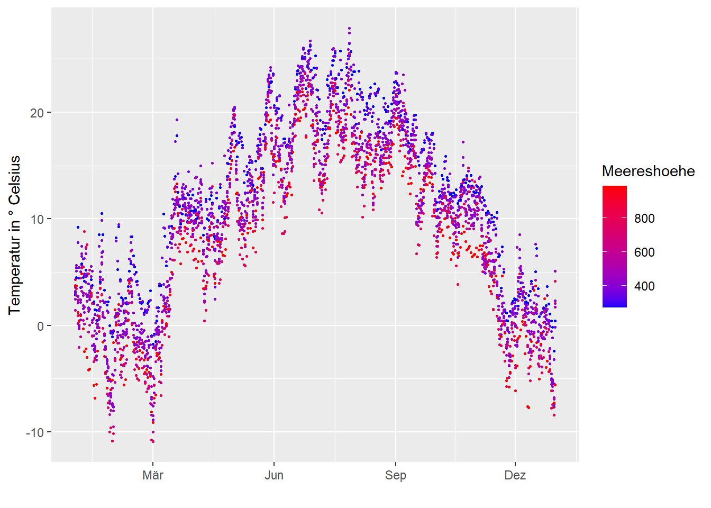
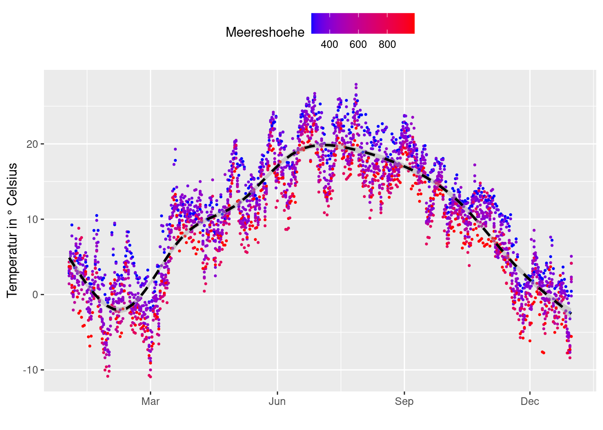
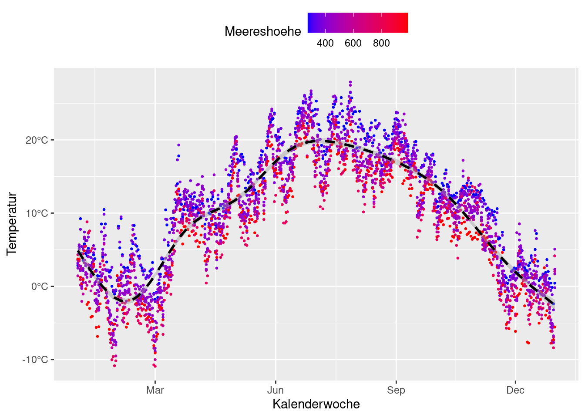
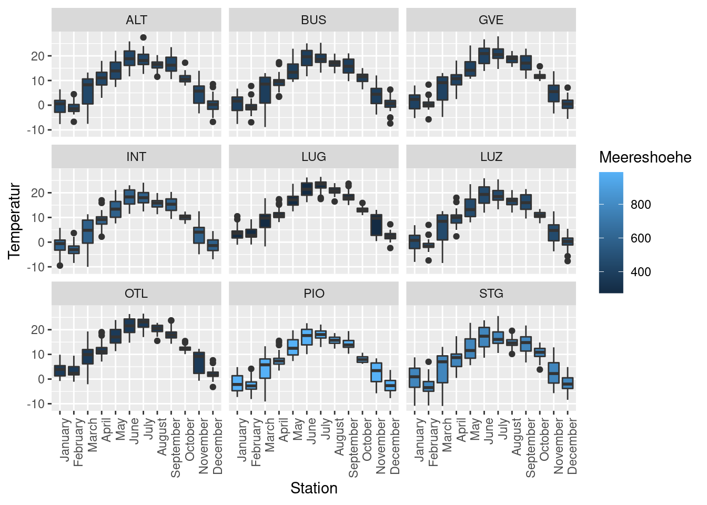
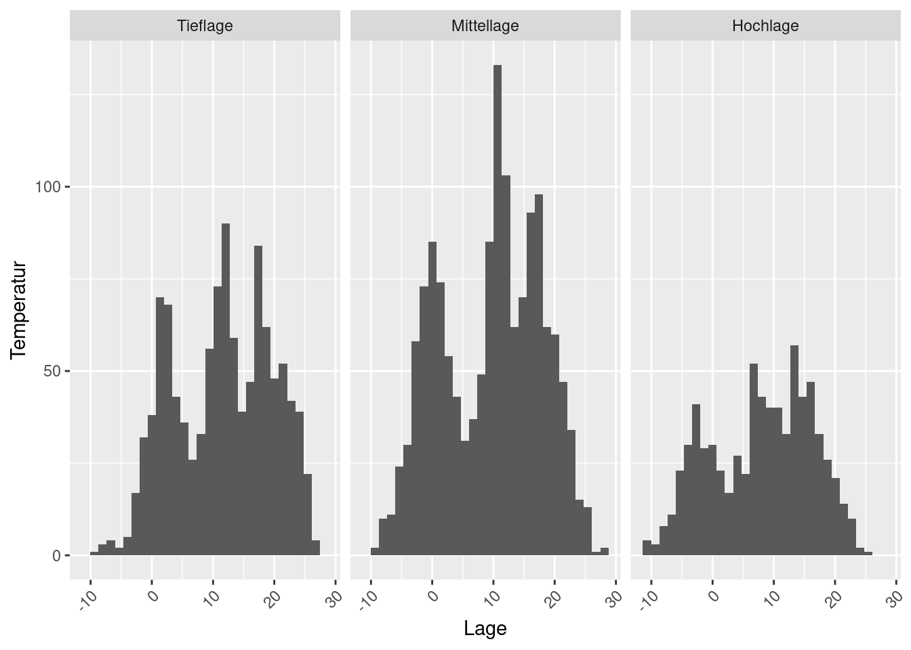

Infovis 2: Übung A
Für die heutige Übung brauchst du den Datensatz temperature_2005.csv. Dabei handelt es sich wieder um Teperaturwerte verschiedener Stationen, diesmal aus dem Jahr 2005. Das Datum ist so formatiert, dass R (isbesondere read_csv) es korrekt als datetime erkennen und als POSIXct einlesen sollte.
library(readr)
library(dplyr)
library(lubridate)
library(tidyr)
library(ggplot2)Aufgabe 1
Mache aus der wide table eine long table die wie folgt aussieht.
| time | station | temperature |
|---|---|---|
| 2005-01-01 | ALT | 1.3 |
| 2005-01-01 | BUS | 1.5 |
| 2005-01-01 | GVE | 1.1 |
| 2005-01-01 | INT | 0.2 |
| 2005-01-01 | OTL | 2.2 |
| 2005-01-01 | LUG | 1.7 |
Lade anschliessend temperature_2005_metadata.csv herunter und verbinde die beiden Datensätze mit einem left_join via station (bzw. stn).
Rows: 24 Columns: 5
── Column specification ────────────────────────────────────────────────────────
Delimiter: ","
chr (2): stn, Name
dbl (3): Meereshoehe, x, y
ℹ Use `spec()` to retrieve the full column specification for this data.
ℹ Specify the column types or set `show_col_types = FALSE` to quiet this message.Aufgabe 2
Erstelle ein Scatterplot (time vs. temperature) wobei die Punkte aufgrund ihrer Meereshöhe eingefärbt werden sollen. Tiefe Werte sollen dabei blau eingefärbt werden und hohe Werte rot (scale_color_gradient). Verkleinere die Punkte um übermässiges Überplotten der Punkten zu vermeiden (size =). Weiter sollen auf der x-Achse im Abstand von 3 Monaten der jeweilige Monat vermerkt sein (date_breaks bzw. date_labels von scale_x_datetime()).
Warning: Removed 1 rows containing missing values (geom_point).
Aufgabe 3
Erstelle eine Zusatzvariabel Date mit dem Datum der jeweiligen Messung ( mit as.Date). Nutze diese Spalte um die Tagesmitteltemperatur pro Station zu berechnen (mit summarise()).
Um die Metadaten (Name, Meereshoehe, x, y) nicht zu verlieren kannst du den Join aus der ersten Übung wieder ausführen. Alternativ (schneller aber auch schwerer zu verstehen) kannst du diese Variabeln innerhalb deines group_by verwenden.
`summarise()` has grouped output by 'time', 'station', 'Name', 'Meereshoehe',
'x'. You can override using the `.groups` argument.Aufgabe 4
Wiederhole nun den Plot aus der ersten Aufgabe mit den aggregierten Daten aus der vorherigen Aufgabe. Um die labels korrekt zu setzen musst du scale_x_datetime mit scale_x_date ersetzen.
Warning: Removed 1 rows containing missing values (geom_point).
Aufgabe 5
Füge am obigen Plot eine schwarze, gestrichelte Trendlinie hinzu.
Warning: Removed 1 rows containing non-finite values (stat_smooth).Warning: Removed 1 rows containing missing values (geom_point).
Aufgabe 6
Positioniere die Legende oberhalb des Plots (nutze dazu theme() mit legend.position).
Warning: Removed 1 rows containing non-finite values (stat_smooth).Warning: Removed 1 rows containing missing values (geom_point).
Aufgabe 7 (optional, fortgeschritten)
Füge den Temperaturwerten auf der y-Ache ein °C hinzu (siehe unten und studiere diesen Tipp zur Hilfe).
Warning: Removed 1 rows containing non-finite values (stat_smooth).Warning: Removed 1 rows containing missing values (geom_point).
Aufgabe 8
Jetzt verlassen wir den scatterplot und machen einen Boxplot mit den Temperaturdaten. Färbe die Boxplots wieder in Abhängigkeit der Meereshöhe ein.
- Beachte den Unterschied zwischen
colour =undfill = - Beachte den Unterschied zwischen
facet_wrap()undfacet_grid() facet_grid()braucht übrigens noch einen Punkt (.) zur Tilde (~).- Beachte den Unterschied zwischen “
.~” und “~.” beifacet_grid() - verschiebe nach Bedarf die Legende
Warning: Removed 1 rows containing non-finite values (stat_boxplot).
Aufgabe 9
Als letzter wichtiger Plottyp noch zwei Übungen zum Histogramm. Erstelle ein Histogramm geom_histogram() mit den Temperaturwerten. Teile dazu die Stationen in verschiedene Höhenlagen ein (Tieflage [< 400 m], Mittellage [400 - 600 m] und Hochlage [> 600 m]). Vergleiche die Verteilung der Temperaturwerte in den verschiedenen Lagen mit einem Histogramm.
Tip: Nutze cut um die Stationen in die drei Gruppen aufzuteilen
`stat_bin()` using `bins = 30`. Pick better value with `binwidth`.